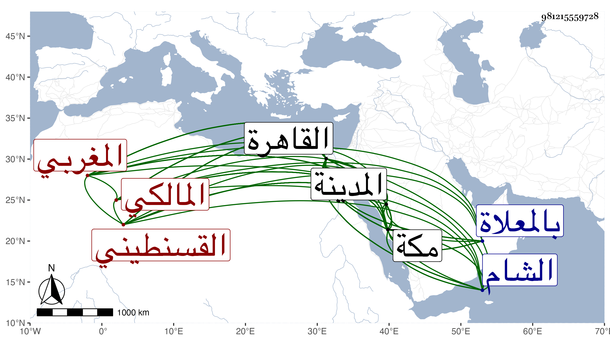

0902Sakhawi.DawLamic.ITO20230111-ara1.EIS1600.981215559728
Biography ID: 981215559728
941
يحيى بن أحمد بن عبد السلام بن رحمون الشرف أبو زكريا بن الشهاب أبي العباس القسنطيني المغربي المالكي نزيل القاهرة ثم مكة ويعرف بالعلمي بضم العين وفتح اللام وربما سكنت نسبة فيما قاله لي إلى العلم . ولد ظنا بعيد القرن وحفظ القرآن وكتبا واشتغل ببلده وغيرها على جماعة منهم قاضي الجماعة عمر القلشاني وقدم القاهرة وقد فضل بحيث قال أنه لم يكن يفتقر إلى أحد في الاشتغال ولكنه تقوى بالأخذ عن ابن الهمام والقاياتي ومما قرأه عليه شرح ألفية الحديث بتمامه وأخذ عن شيخنا بعضه بل حضر مجلسه في الأمالي وغيرها وحضر يسيرا عند البساطي ، وحكى لي مباحثة وقعت بينه وبين القرافي بحضرته وأخذ صحيح مسلم عن الزين الزركشي ما بين قراءة وسماع ، وحج في سنة إحدى وأربعين وسمع بمكة على أبي الفتح المراغي ومن ذلك بعض مشيخته تخريج النجم بن فهد وقرأ بالمدينة على الجمال الكازروني من أول البخاري إلى الشهادات وعاد فقطن القاهرة وأدب أولاد القاياتي ثم كان ممن انضم إلى الحسام بن حريز ويقال أن الحسام كان يقرأ عليه ولما ولي القضاء استنابه في تدريس المنصورية وارتفق بإحسانه وبره . وتصدى قبل ذلك وبعده للتدريس بجامع الأزهر وغيره . وانتفع به الفضلاء سيما في الفقه وصار بأخرة أوحد الجماعة فيهم ، ثم حج في سنة خمس وسبعين فقطن مكة على طريقة جميلة من الانجماع عن الناس والمداومة على الطواف ليلا والتلاوة والتهجد والإقراء حتى انتفع به الفضلاء أيضا في الفقه وأصوله والعربية وغيرها كالمنطق والمعاني والبيان وأصول الدين بل أقرأ شرح النخبة وغيره وروى البخاري ومسلما والشفا وغيرها وامتنع من الكتابة على الفتيا تورعا إلا باللفظ كما أنه لم يأذن لأحد فيها وفي التدريس بها إلا لمعمر وللبحيري أحد ملازميه بالقاهرة وللبدر بن المحب الخطيب إذ جاور بل كان يمتنع بأخرة من سماع عرض الأطفال ، وعرض عليه وهو بالقاهرة قضاء الشام ثم وهو بمكة قضاءها فامتنع وتزوج مع شيخوخته بكرا ، وبلغني أنه كتب على المدونة والمختصر والرسالة والبخاري وقد لقيته بالقاهرة ثم بمكة وبالغ في التواضع معي والإقبال علي . مات في عصر يوم الاثنين رابع ربيع الثاني سنة ثمان وثمانين وصلي عليه بعد صلاة الصبح عند باب الكعبة ثم دفن بالمعلاة في تربة ابن الزمن وكان مقيما برباطه رحمه الله وإيانا .
